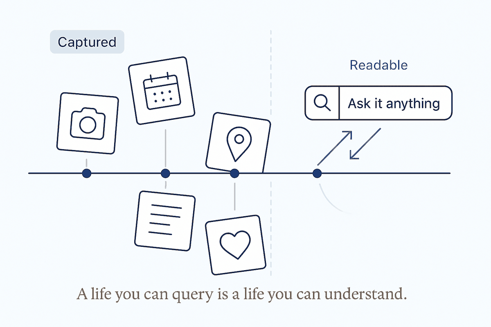

A structured life isn't an archive of facts — it's a story you can read back, search, and that keeps writing itself.

Give your life enough structure and something quietly shifts: the pile of notes, photos, trips, receipts and decisions stops being an archive and becomes a narrative. Not a folder you dread opening, but a story — one you can read back, search, and follow. The same discipline that makes a data warehouse queryable makes your own life legible to you, chapter by chapter, in a way memory never could.
The difference is between storage and story. Storage is where things go to be forgotten — a drive full of files nobody re-reads, a decade of photos you never look at, journal entries that vanish the moment they're written. A story is connected: the trip links to the people on it, to what they said, to the decision it led to, to the photo that proves you were there. Structure is what turns the first into the second. Nothing is added; the connections were always latent. They just needed a shape to become visible.
And the story keeps writing itself, because the structure does the narrating. The daily note indexes the day; the days roll up into weeks, the weeks into a year — so the summary of your life is never something you sit down to reconstruct from a cold, exhausted memory. It's already there, derived from what actually happened, waiting to be read. Ask it "what was that autumn like?" and it answers from the record, not from the flattering fog memory would supply instead.
There's a subtler payoff, upstream of any query — in the making of the record itself. Taking the photo, writing the daily note, marking the moment: done right, it isn't accounting, it's attention. It's a small act of noticing that this happened and mattered — of living the day on purpose, with some gratitude for it, instead of letting it blur past. And crucially it's the opposite of a bucket-list: no forced quota of experiences to grind through, no stress of a life measured against a checklist. Just the quiet habit of being present enough to keep the record — which turns out to be the same habit as being present enough to actually live it.
None of that means winging it. The same structure that lets you read the story back is what lets you plan the next chapter well — and planning is where a lot of the presence is either won or lost. Poor planning quietly costs you: wasted hours, avoidable stress, money spent badly, and the best of it gone — the good rooms, the right places, the moments that were only available if you'd thought ahead. Structure isn't the enemy of spontaneity here; it's what buys you the freedom to be present when it counts, because the groundwork is already done. Being deliberate about your life and being relaxed in it turn out to be the same move.
And there's a quiet democracy in it. If you're not rich, you have to be smart — and the good news is that being smart has never been cheaper. The technique is lying around for free: the internet, a phone in your pocket, AI, GPS, maps, reviews, the whole planet's knowledge one query away. Use it well and someone without unlimited means can still reach and experience an enormous amount — can find the right place, the good room, the moment worth having, without paying the premium that stands in for planning. Structure and the tools of the day are the great leveller: they turn thinking ahead into the thing you spend instead of money.
None of which would matter if it weren't also just fun. Building this — creating the system, watching it get smarter, seeing your own life become something you can read — is a pleasure in its own right, not a chore you endure for some later payoff. Abraham Hicks says life is about fun and expansion, and that's exactly the frame: the structure exists to expand what you can do and know and remember, and the building of it is the fun. A story you can read back, a next chapter you can plan well, a life you can reach more of on your own terms — that's expansion. Enjoying the making of it is the fun. The system is only ever in service of both.
Which is why the last word has to be a warning to myself. Life is about evolving — growing, feeling good, getting out into the world — and none of that happens inside a vault. The system is a means, and the failure mode for someone who loves building systems is to sink into them: to polish the structure instead of living the thing it was built to serve, to mistake a tidy archive for a full life. The record is not the life. The plan is not the trip. The whole point of making the story queryable is to spend less time managing it and more time out there adding to it — outside, with people, evolving, having fun. If the structure ever starts costing you presence instead of buying it, it has quietly become the opposite of what it's for. Keep it in its place: a good means to a life you actually go and live.
And the same discipline applies to the tools that help you build it. An AI that loves refining a system will happily refine it forever — polishing the structure, tidying the metadata, improving the improvement — because that work is legible and never done. Someone has to keep pulling it back to the point: are we undertaking things, or just perfecting the machine that was supposed to free us up to undertake them? Watch yourself, and watch your tools, for the drift from doing to maintaining. The scoreboard that matters isn't how good the system got. It's how much life it let you go and live.
That's the fuller payoff of taking your own knowledge seriously: not productivity, not a tidier drive, but the ability to ask your own life questions and get honest answers. Where did the money actually go. When were you happiest, by the evidence and not the mood. What did that person mean to you, across all the years you knew them. A life you can query is a life you can understand — and a story you can read back is the closest thing there is to living it twice.